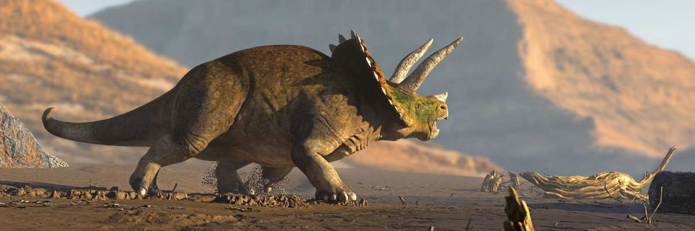

Цератопсы
Цера́топсы, или рогатые динозавры (лат. Ceratopsia, от др.-греч. — рог и лицо), — клада (инфраотряд) растительноядных птицетазовы динозавров позднего юрского и мелового периодов, обладавших характерным крючковатым клювом. Ископаемые остатки обнаружены в Северной Америке, Азии и Европе. Из наиболее известных представителей — цератопс и трицератопс.
Происхождение и эволюция цератопсов окончательно не ясна. Самым ранним цератопсом считается открытый в Китае в 2005 году динозавр Yinlong, чьи остатки датируются поздним юрским периодом (161,2—155,7 млн лет назад, оксфордский ярус), в результате чего предполагается их азиатское происхождение в юрском периоде. Также остаётся открытым вопрос и появление крупных рогатых динозавров в позднем меле на территории Северной Америки.
Находки палеонтологов в 2010 году на территории Венгрии дали доказательства того, что в среднем меловом периоде цератопсы (Ajkaceratops) обитали на территории современной Европы, которая в те времена представляла собой разрозненные острова. Учёные предполагают, что данная разновидность мигрировала из Азии, двигаясь от острова к острову.
Классификация цератопсов
- Цератопсиды
- Протоцератопсиды
- Пситтакозавриды